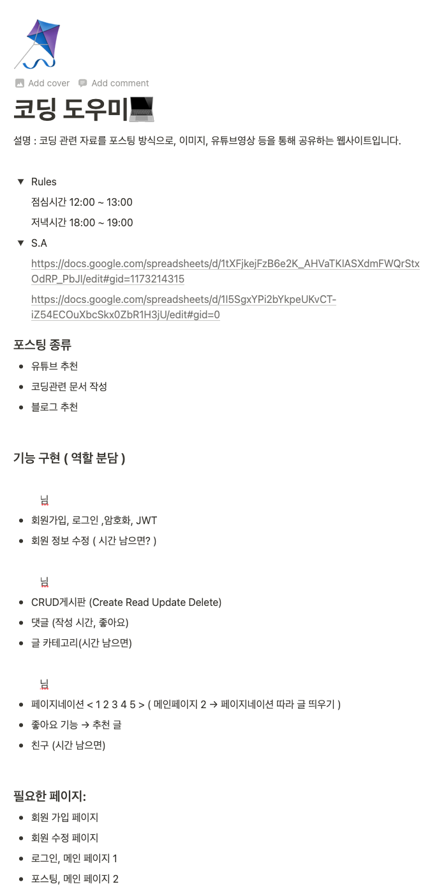
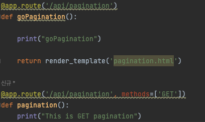
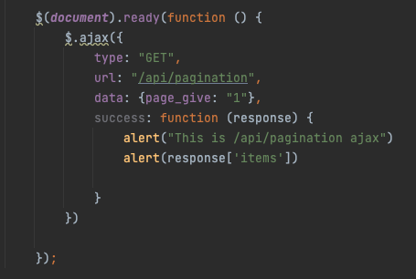
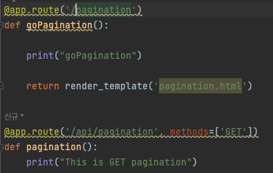

TIL 5일 차 협업
- 2021, 맥북 프로 M1 Pro 14인치 모델
- Ventura 13.1
제대로 된 첫 프로젝트 시작
오늘은 첫 풀스택 프로젝트를 하는 날이다.
팀장을 맡게 되었다…
분명 팀원이 4명이라 했는데 1명이 들어오지 않았고
3명이서 해야 될 것 같은 느낌이 들었다 ..ㅠㅠ
팀원 한 명이 들어오지 않아.. 어쩔 수 없이 3명이서 진행했다.
협업을 하기 위해 무엇이 필요할까?
컴퓨터를 잡고 키보드를 두들기기 전, 이 협업의 프로세스를 익혀놓으면 나중에 가서 도움이 될 것 같았고
협업을 하기 위해 무엇을 알아야 하는지 많이 찾아봤다.
노션
실제로 많이 쓰이는지는 모르겠지만, 항해99에서 노션을 자주 활용하기에 노션에
기획 및 와이어 프레임 등을 관리하기로 했다.

깃허브
깃허브는 파일 버전 관리, 협업을 위해서 사용했고, 깃 관리 앱은 깃허브 데스크탑을 사용하였습니다.
확실히 깃허브가 없었다면.. 협업을 어떻게 할지 생각만 해도 ㅎㅎ
Mongo DB (atlas)
Database는 아틀라스의 Mongo DB를 사용하였고, 무료로 사용 중이기에, 아직은 만족합니다만 ㅜㅜ
가끔가다 웹에서 Collection이 접속이 안되는 경우가 많아 살짝 불편합니다.
와이어 프레임 작성 웹툴
와이어 프레임 작성에는 excalidraw를 사용하였습니다
실시간으로 가볍게 할 수 있어 좋은 것 같고, 실시간으로 마우스가 보이는 게 신기하네요.
excalidraw
협업 진행 방식
일단 노션으로 기획 및 대략적인 와이어 프레임, ERD, API 명세, 역할 분담을 의논하고
시작하였습니다.
힘들었던 점
기획을 잡고 데이터베이스와의 관계, API를 하면서 작성하는 게 아닌
기초부터 미리 계획을 한다는 것이 해보지 않아서 그런지 어려웠고,
여기에 익숙해져야겠다는 생각도 했습니다.
역할 분담
나는 저번 시간에 암호화(bcrypt hash), 로그인, 회원정보 수정, 세션 등을 구현해 봤기에, 이번에는 다른 것을 해보며 삽질을 좀 많이 해보고 싶었기에,
페이지 네이션(포스트 표시), 좋아요 기능, 친구 기능 등을 구현해 보도록 하였다.
기술적으로 힘들었던 점 -> 해결
아래 2개의 /api/pagination이 존재하는데,
ajax GET 방식으로 아래의 /api/pagination으로 데이터를 보내는대
왜 응답이 안 오는지 한참 동안 고민했습니다. ㅜ
알아보고 생각해 본 다음 깨달았습니다.
GET 방식을 써주지 않더라도 기본적으로 GET 방식으로 동작해서
위/아래 두 개의 /api/pagination을 구분하지 못한다는 것을..


그래서 아래와 같이 페이지 이동만을 위한 뷰 함수와 api 페이지의 네이밍을
확실하게 해서 해결하였습니다.

페이지 네이션
일단 먼저 페이지 네이션을 구현해 보려고 계산식을 계속 짜보았는데
도저히 제 머리로는 구현이 안 돼서 구글링을 좀 많~이했습니다.
근데 아무리 코드를 복붙해도 안되길래, 어느 정도는 복붙하고
그 뒤로는 기능을 이해하며 만들어나가며 만들었습니다.
TIL이기 때문에 모든 코드를 다 올리기엔 너무 길고,
간단히 말하자면,
페이지 네이션 할 페이지 수, 한 페이지당 포스트 수, 현재 페이지 등을 받고,
페이지 네이션 시작 블록, 현재 위치, 끝 블록 등으로 계산을 해서
HTML에서 Jinja2로 해결하고, 글을 불러오는 같은 경우는 몽고 db 기준
아래와 같이 해결했습니다. (중간의 skip은 계산식이 따로 있음.)
-> 이 mongo db 쿼리문도 터미널 혹은 다른 곳에서 사용할 때랑 파이썬이랑 다른지 많이
찾아본 다음 알아냈습니다,
구글링 해도 많이 안 나오는 정도.. (뭔 중괄호가 그리 많은지..)
all_posts = list(db.posts.find().sort('_id', pymongo.ASCENDING).skip(skip).limit(postsLimit))
페이지 네이션을 구현하며 어려웠던 Jinja2
난생 써보지 못한 Jinja2에 페이지 네이션을 구현하려고 하니, HTML에서 동적인 기능을 쓴다는 게 신기하고, 생각보다 어려웠습니다..
Jinja2를 사용하다 깨달은 점은,
A라는 페이지 HTML로드 시에 ajax를 통하여 비동기로 데이터를 가지고 왔다면
그 데이터는 Jinja2로 A 페이지에서는 사용하지 못하는 것 같습니다.
아예 렌더링이 끝나면 Jinja2의 역할도 끝나는 것 같습니다.
그래서 많이 헤매었는데, 원래 하던 방식이
페이지 네이션이 되는 Page 접속 -> 문서 로드 시 ajax 스크립트 불러와 페이지 네이션 표기 방식이었다면
ajax로 불러오지 말고 서버단에서 처음 페이지 네이션을 미리 계산해서 가지고 오고,
버튼 클릭 시 url로 접근하여 다시 가지고 오는 방식으로 하니 잘 진행되었습니다.
(버튼 클릭 시 url_for로 이동합니다.)